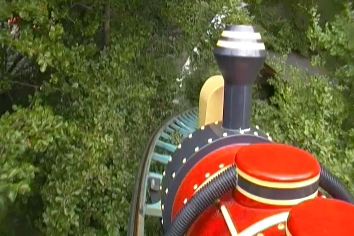
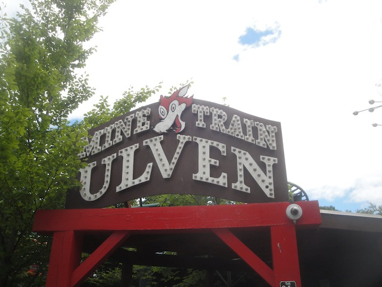

| |
Mine Train Ulven Review

We're here at Bakken. Today's coaster is a quirky and fun little ride. It's Mine Train Ulven, which translated into English, is the Wolf's Mine Train. But this isn't a mine train. This is just...a fun little family coaster. I've heard a lot of people say that this is apparently an outdoor version of Skull Mountain, which is certainly an intersting ride. And I will admit. I really liked this ride. So let's just hop in, pull down the lap bars, and away we go. We head around a turn, go through a small dip, and begin to climb the lifthill, getting a good view of the trees. We eventually reach the top, go through a small S turn, and head down the first drop. Surprisingly, this gives us some nice speed and is actually fairly fast. We then decide to TAKE THE....and we're already out of the tunnel. That was fast. We then go around this curved hill and whip into a sharp banked turn around some wall theming. Hey, there's actually some laterals here. This leads to a banked downward helix, it gives us some speed, and more laterals. We then head up, back towards the wall theming, go around another S Curve, and around another banked turn. Though this is actually a breather moment of the ride. We then head down a small little drop, rise up, and head around another banked turn. We then bank to the other direction and head down a small banked drop. Wee!!! More speed. We then see a tiny little hill. Ooh airtime!!! =) But nope. They trim it here. F*CKING LAME!!! We then head around another banked helix down, into another banked helix down in the opposite direction. Ooh. S Helix. Interesting. We then go through some more curves, low to the ground, and glide straight into the brakerun. I know it's mainly a family coaster, but I honestly really liked this ride. It's not amazing or anything. But it is a fun little ride. It has some good speed, maintains it well, has some fun laterals, and it's just an overall fun ride. Who knew Skull Mountain outdoors would be this fun?
7/10
Location: Bakken
Opened: 1997
Built by: Intamin
Last Ridden: June 14, 2014
Mine Train Ulven Photos

Home
|